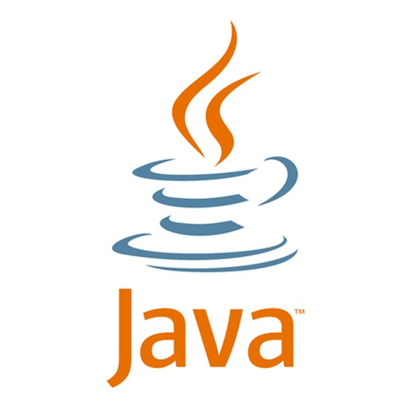

So who is Abhitej Bokka?
🚀 Let's find out!!! 🚀
Keep Scrolling...
About Me Abhitej
I'm a student at Rutgers!
I love Computer Science. I love Statistics.
So I decided to major in both!
Unrelated stuff about Abhitej
I have 2 fish tanks!
I have about...
- 13 Neon Tetras
- 7 Serpae Tetras
- 5 Nerite Snails
- 4 Ember Tetras
- 3 Black Neon Tetras
- 3 Orange Guppies
- 1 Amano Shrimp
What do I do outside of coding though?
Basketball
You can find me at the College Ave Gym throwing grandma shots into the basket.
Cooking
Cakes & Brownies are my go to whenever I'm really hungry and so is my brother.
Dancing
All you have to do is play: Dior, Nightcrawler, or Pick up the phone and I gurantee you will have a fun time.
🏆 Skills
Tech I work with:
Proficient:


Intermediate:


What work have I done?
Work Experience
Rutgers Mobile App Development Mentor
May 2021 - Present
Freelance Computer Science, Math, and ACT Tutor
October 2018 - April 2021
FedEx Ground Package Handler
August 2020 - September 2020
Rutgers Laboratory Assistant Internship
June 2019 - August 2019
\
Thanks for making it all the way here!